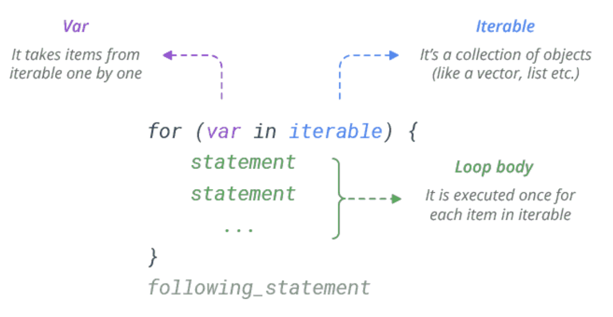

Chapter 9 Loops
9.1 While Loop
A while loop is used when you want to perform a task indefinitely, until a particular condition is met. It’s a condition-controlled loop.

The loop will continue until the condition is FALSE.
## [1] 5
## [1] 4
## [1] 3
## [1] 2
## [1] 1If the condition is false at the start, the while loop will never be executed at all.
The break statement is used to exit the loop immediately. It simply jumps out of the loop altogether, and the program continues after the loop.
x = 5
# If statement starts as TRUE, the loop will never run
while (x != 0 ) {
print(x)
x = x - 1
if(x == 2){
print("Entered IF statement, stop loop")
break
}
}## [1] 5
## [1] 4
## [1] 3
## [1] "Entered IF statement, stop loop"If not given an adequate stopping criteria or break statement the loop will continue forever. For example, if we started the above examples at x = -2.
9.2 For Loops
The for statement in R is a bit different from what you usually use in other programming languages. Rather than iterating over a numeric progression, R’s for statement iterates over the items of a vector or a list. The items are iterated in the order that they appear in the vector.

## [1] "red"
## [1] "green"
## [1] "blue"
## [1] "yellow"## [1] 3.14
## [1] "Hi"
## [1] 1 2 3If you need to execute a group of statements for a specified number of times, use sequence operator : or built-in function seq().
## [1] "Hello!"
## [1] "Hello!"
## [1] "Hello!"## [1] 4
## [1] 16
## [1] 36
## [1] 64Like the while loop, the break statement is used to exit the loop immediately. It simply jumps out of the loop altogether, and the program continues after the loop.
## [1] "red"
## [1] "green"For loops do not have the same risk of “running forever”, like while loops have.
9.3 Bisection
9.4 Nested Loops
9.5 Switch
9.6 Next
9.7 Break
Practice Problems
Create the function which has one arguement
n. Have this function generate the first n fibannaci numbers using a while loop. Note that the Fibanacci sequence is formed by starting with the number 0, 1 and then adding the last two numbers to get the next number: 0, 1, 1, 2, 3, 5, 8, etc.Create the function which has one arguement
n. Have this function generate the first n fibannaci numbers using a for loop. Note that the Fibanacci sequence is formed by starting with the number 0, 1 and then adding the last two numbers to get the next number: 0, 1, 1, 2, 3, 5, 8, etc.Create a function which has one argument
num. Have this function generate the factorial of this number using any iteration technique you would like. Recall that a factorial of a number is product of all whole numbers from our chosen number down to 1. For example, 4! (4 factorial) = 4(3)(2)(1) = 24Write a function which has only one argument
n. Have this function display thenterms of odd natural number and their sum.
Answer 1
# Generate the first n fibannaci numbers
gen_fib = function(n){
# Initiate the fib sequence
fib = c(0,1)
current_n = length(fib)
while(current_n<n){
# Generate the next number
next_number = fib[c(current_n-1)] + fib[current_n]
# Add new number
fib = c(fib, next_number)
# Update the length
current_n = length(fib)
}
return(fib)
}Answer 2
# Generate the first n fibannaci numbers
gen_fib = function(n){
# Initiate the fib sequence
fib = c(0,1, rep(0, c(n-2)))
for(index in 3:length(fib)){
# Generate the next number
next_number = fib[c(index-2)] + fib[index-1]
# Add new number
fib[index] = next_number
}
return(fib)
}Answer 3
my_factorial = function(num){
my_answer = 1
for(i in 1:num){
my_answer = my_answer * i
}
print(my_answer)
}Answer 4
odd_numbers = function(n){
odd_vector = NA
for(i in 1:n){
odd_vector[i] = 2*i - 1
}
return_me = list(vector = odd_vector,
the_sum = sum(odd_vector))
return(return_me)
}
odd_numbers(5)## $vector
## [1] 1 3 5 7 9
##
## $the_sum
## [1] 25